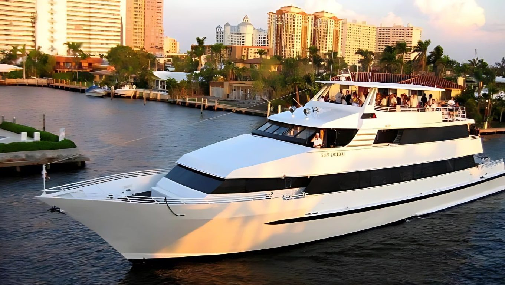
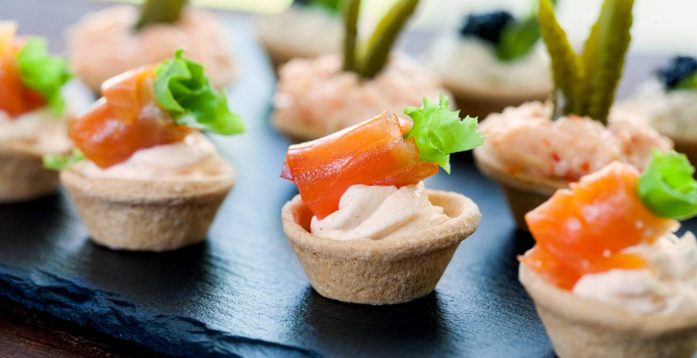
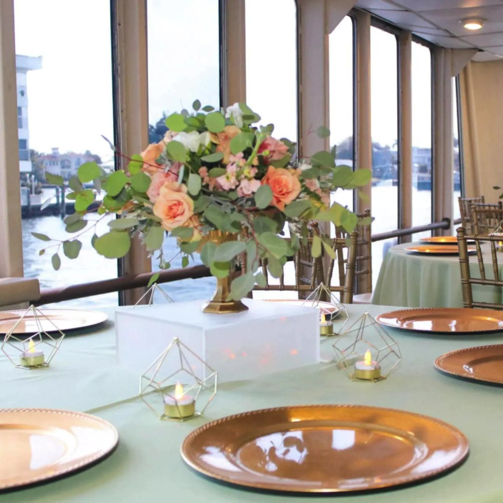
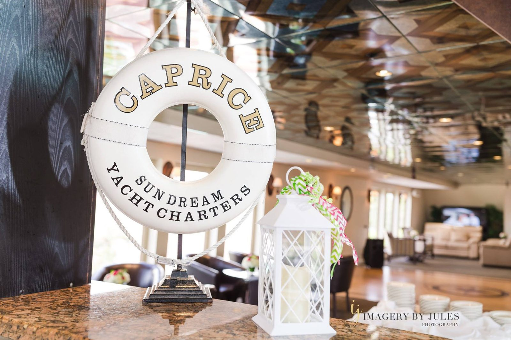

Fort LauderdaleIntracoastal Waterway
The best room in Fort Lauderdale leaves the dock at six.
Three private event yachts, a kitchen that cooks onboard, and the same family at the helm since 1979. Weddings, company nights and milestone parties for 16 to 516 guests.
- Fleet
- 3 yachts, owned not brokered
- Guests
- 16 – 516
- 4.8 ★ across 282 reviews
A sample evening, dock to dock
-
5:30 PM
Step aboard at GalleryOne.
Valet takes the car at the DoubleTree on East Sunrise. Your coordinator is at the gangway with the guest list, and the bar is already open.
-
6:00 PM
Lines off. The city starts to slide by.
We turn onto the Intracoastal, past the waterfront estates and the Las Olas skyline. Cocktails move to the open-air deck.
-
7:10 PM
The sun goes down on cue.
Nobody has to be told to look up. This is when the toast happens, and when the photographer earns the fee.
-
7:45 PM
Dinner, cooked forty feet away.
Not trucked in and reheated. Our full-time chefs plate every course in the galley, so it reaches the table the way it was meant to.
-
9:00 PM
Then the top deck becomes a dance floor.
Stars overhead, the shoreline lit up on both sides, and a sound system built for exactly this. We have you back at the dock by ten.
01The fleet
How many are you bringing?
Guest count decides the yacht. Drag the number and we will point you at the right one.

Best fit for 120 guests02Occasions
Every charter is yours alone.
We never mix groups on one sailing. Whatever you are marking, the whole yacht, crew and kitchen belong to you for the night.
- 01WeddingsVows at sunset, a bridal stateroom, and one coordinator from ceremony to last dance.
- 02Corporate eventsClient nights, galas and team cruises. Several companies rebook the same week every year.
- 03Holiday partiesDecember on the water, with the shoreline dressed in lights for you.
- 04Birthdays & anniversariesMilestones from sixteen guests upward, plated or cocktail-style.
- 05Bar & Bat MitzvahsDining and dancing on one level, so the whole family stays in the room.
- 06QuinceañerasFamilies return for each daughter. We remember the menus.

03Dining
The galley is not for show.
Most charter boats load catering trays at the dock. Ours carry full-time chefs who cook during the cruise, which is why the first thing guests mention afterwards is usually the food.
Menus are written for each event, including dietary needs and children's plates. Full bar service on every yacht.

04Our family
You are talking to the owners.
The Brantmeyer family has run Sun Dream from the same Fort Lauderdale dock for more than forty-five years. We own all three yachts and crew them ourselves. There is no broker between you and the boat, and no commission folded into your quote.

- No broker feesOwner-direct pricing, itemised before you sign.
- One coordinatorThe person who plans your event is onboard for it.
- Never sharedOne group per sailing, always.
- A reply in 24 hoursFrom a person in our office, not a booking engine.
05In their words
People come back. Often yearly.
For several years we've held events with Sun Dream, including our quinceañeras aboard the Catalina and Caprice, and they're always fantastic. They're incredibly organized, tailoring each event to the number of passengers, the type of food, even special diets.
What an amazing time I had celebrating my 70th birthday. Kristin made the planning process painless. The food was delicious, and the Captain was great engaging with the guests.
Once again, our annual company cruise aboard the Catalina was a hit. Everyone I talked to raved about the food. Carol and the staff bent over backwards to make it perfect.
We had 50 guests board Sun Dream and it was a beautiful celebration. Kristen and Sheila made planning this event fun and simple.
06Request a quote
Tell us the date.
We'll hold the tide.
Send the basics and someone from our office replies within 24 hours with availability, the right yacht and a written, itemised quote.
- Office
- (954) 765-1460
- Charters
- (954) 710-5993
- Boarding
- DoubleTree by Hilton GalleryOne, East Sunrise Blvd. Valet available.
- 852 NE 20th Avenue, Fort Lauderdale, FL 33304